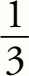
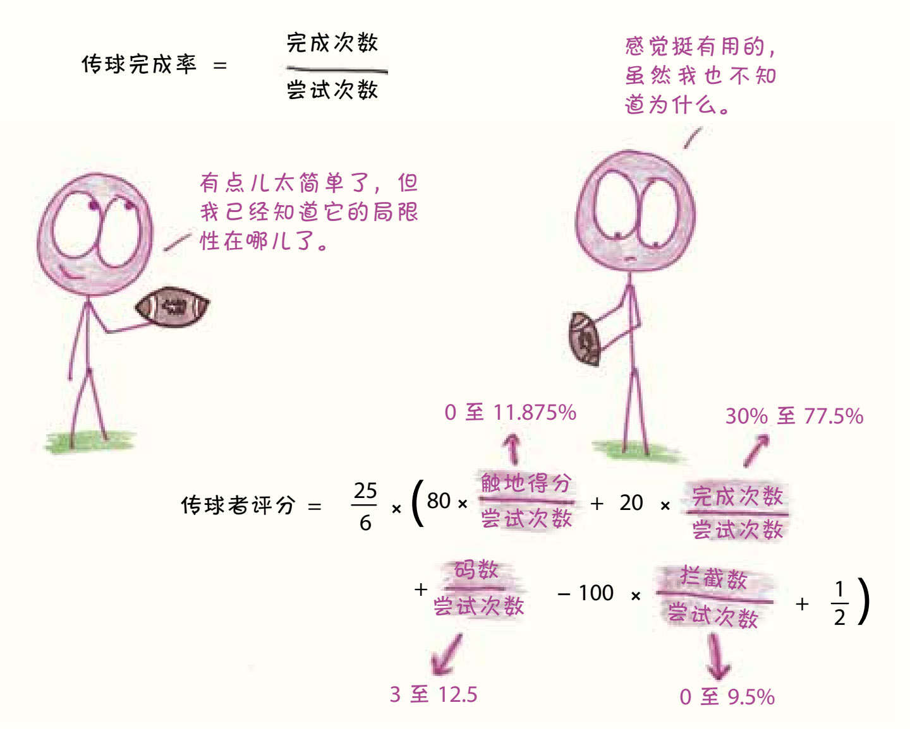
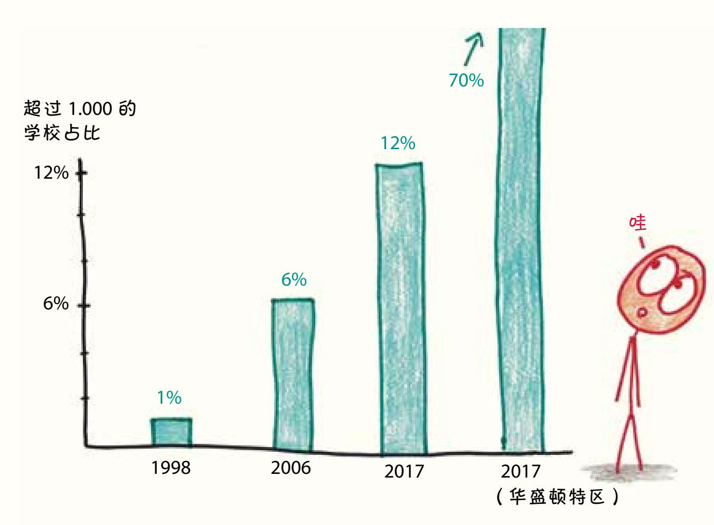

老师的附加值5
回到马修斯和《新闻周刊》的故事，我很自然地想到一个问题：挑战指数是一种什么样的衡量标准呢？
3. 是窗口还是记分板？
1998年，马修斯第一次介绍挑战指数时写道：
几乎每位专业的教育工作者都会告诉你，给学校排名会适得其反，是不科学的、有害的、错误的。在这样的评估中，不论选用哪个标准，都将是狭隘和扭曲的……我接受所有这些论点。然而，作为一名记者，同时也是一名家长，我认为在某些情况下，一个排名系统——无论多么有限——都是有用的。6
这里的关键词是“有限”。学校具有的复杂性是不可简化的，就像生态系统或日间肥皂剧一样复杂。要用一个指标来度量如此复杂的系统，有两个基本的方法：（1）将多个变量合并到一个复杂的综合评分中；（2）选择一个简单明了的变量。
这让我想起了橄榄球。在橄榄球中，衡量四分卫球员表现的一个简单方法是传球完成率（completion percentage），也就是他的传球被成功接住的次数除以他的传球数。他传出的球有多少被接到？大多数赛季中，联赛冠军队的传球完成率接近70%，而联赛的平均水平为60%多一点儿。
和许多窗口一样，传球完成率介于“简单”和“过于简单”之间。它对保守的5码传球和足以扭转战局的50码传球一视同仁：二者都“被接住了”；它将传球失误带来的小失落与传球被拦截的不幸相提并论：二者都“没有被接住”。虽然所有的统计数据都有缺陷，但至少这些缺陷是透明的，我们不能指责“传球完成率”是虚假宣传。
而“传球者评分”（passer rating）7则截然不同。这个令人眼花缭乱的古怪统计指标包括了传球尝试次数、传球完成次数、码数、触地得分次数和拦截数，分数范围为从0到158

。它与团队胜利紧密相关，但我从未见过任何人说自己知道如何计算传球者评分或知道这个指标的盲区在哪里。
在橄榄球的传球者评分和传球完成率之间做选择，就是需要我们在复杂和透明之间进行权衡的例子。我很清楚马修斯是那种会选择“传球完成率”的人。在介绍2009年《新闻周刊》中的排行榜时，他写道：
简明的标准是它的优势之一。每个人都能理解挑战指数的简单算法并参与讨论，而不是像《美国新闻与世界报道》（U.S. News & World Report）中的“美国最好的大学”这类排名，其中有太多的因素让人无法理解。8
如他所言，挑战指数作为一个粗略的衡量标准，总比什么都没有强，它甚至还坦承了自己的不完美。这是一个诚实的窗口。
然而，当他在全国性的新闻杂志上以“美国最好的高中”为题发表这些统计数据时，你会开始发现这个窗口就成了一个记分牌。
2002年，美国国家研究委员会写道：“这份名单有了自己的生命力。如今，跻身榜单前100名对高中而言变得非常重要，一些没有上榜但有竞争力的高中甚至在自己的网站上发布了声明，解释本校没有上榜的原因。”9
威斯康星州密尔沃基市的一名教师说：“家长们的意见是最大的。如果我们提供更多的AP课程，学校在社区中的地位会上升，还可能进入《新闻周刊》的前100名。”10
糟糕的记分牌有一个特点，就是它们很容易被利用。在这个案例中，学校可以通过要求更多学生选修AP课程，提高挑战指数。马修斯在《华盛顿邮报》的同事瓦莱丽·施特劳斯（Valerie Strauss）写道：“因为挑战指数只考虑AP考试的参加次数，而不考虑实际的分数，所以学校会让尽可能多的学生参加考试。”11
另一个问题在于计算方式。为了方便起见，马修斯没有用“全部学生”作为分母，而是选择将“即将毕业的学生”作为分母。假设每一个学生都能在四年内毕业，那么在数学上二者是等价的。但在高辍学率的情况下，这个数据会出现异常。以任意三个学生为例，如果每人都参加了一次AP考试，然后有两名学生辍学，那么根据马修斯的算法，剩下的一位毕业生已经参加了三次AP考试。
关于挑战指数的故事应该这么讲。最初，它的确是个很好的窗口，通过考虑参加考试次数而不是通过考试的次数，在排除财富和特权的影响后，评估了学校是否为学生营造了一个富有挑战性的环境这一更深层次的问题。尽管它并不完美，但无疑是有价值的。
然而，随着事态的发展，它不再是一位记者为了确定“最具挑战性”的学校而进行的排名，而成了一家著名的新闻杂志公布的“最好”学校的名单。这就产生了反常的激励效果，把好窗口变成了坏记分牌。
故事到这里似乎可以告一段落了，我们可以去看一场橄榄球赛或准备一下AP考试，但这将错过这个故事最有趣的转折，以及马修斯正在玩的游戏的真正本质。
4. 放开那只灵长类动物
消费者排名通常有助于为消费者提供具体的选择建议：买哪种车，申请哪所大学，看哪部电影，诸如此类。但目前还不清楚这种逻辑是否适用于全国范围内的高中排名。我要举家从佛罗里达州搬到蒙大拿州，去上《新闻周刊》中被肯定的高中吗？在决定是去伊利诺伊州斯普林菲尔德市的高中还是马萨诸塞州斯普林菲尔德市的高中之前，你会参考统计数据吗？这个指数和排名究竟是为谁编制的呢？12
马修斯自己也承认，这很简单，他就是为了排名而排名。
他说：“人们是无法抗拒各种排行榜的，具体的内容是什么并不重要——SUV、冰淇淋店、足球队、肥料分配器，什么都好，我们就是想看看谁在上面，谁不在上面。”13 2017年，他写道：“我们都是部落里的灵长类动物，无休止地痴迷于等级排序。”14 挑战指数利用了灵长类心理学的这种怪癖，将其变成武器，使学校变成更富挑战性的环境。
有批评人士称这是一个很容易被操纵的排行，但马修斯并不介意。事实上，这就是问题的关键：他认为参加考试的学生越多越好，对学生严厉督促、连哄带骗让他们参加考试的学校不是作弊，他们这样做很好。他甚至对“最好”这个称号很满意，在接受《纽约时报》采访时他表示，这个词“在我们的社会中是很有弹性的”15。
为了支持观点，马修斯喜欢引用一个2002年对得克萨斯州30多万名学生的研究。16研究人员对学术能力评估测试（SAT）成绩较低的学生进行了调查，发现在AP考试中获得2分（不及格）的学生后来的表现要优于没有参加AP考试的同龄人。看起来，就算当时没有通过考试，努力本身似乎还是为大学的成功打下了基础。17
故事就是这样又出现了反转。马修斯认为，挑战指数是一个有缺陷的窗口，但也是这个国家需要的记分牌。
无论好坏，这份名单的影响是真实的。马修斯将登上排行榜的及格线划为1.000——平均每个毕业生参加AP考试的次数为1。1998年，全国只有1%的学校及格；截至2017年，全国及格的学校增加到了12%18，而在华盛顿特区——马修斯的影响力中心（毕竟，他为《华盛顿邮报》撰稿），这个数字超过了70%。

在马修斯看来，挑战指数尖锐地抨击了那种死气沉沉、固执己见的现状：“人们都认为有很多富孩子的学校就是好的，而有很多穷孩子的学校就很糟糕。”19他自豪地指着满是来自低收入家庭学生的高排名学校。而至于那些反对意见呢，比如佛罗里达州盖恩斯维尔市东区高中的孩子们中许多人的阅读水平都低于这个年级的正常水平，或者洛杉矶洛克高中的孩子们辍学率惊人，他都驳回了，他说这些学校的努力应该得到认可，而不是指责它们的困难。
每一项统计数据都编织了一个它试图衡量的世界的未来愿景。就挑战指数而言，这一愿景带着对詹姆·埃斯卡兰特的怀念，以及在全国范围内复制他的做法的希望。你对马修斯的统计数据的看法，归根结底，取决于你对他的愿景的看法。20